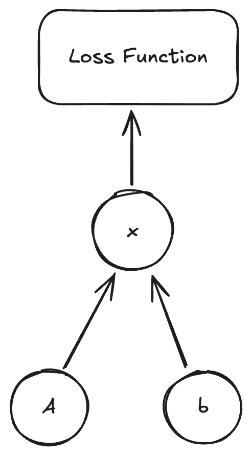

Code visible here.
We can backpropogate circuits (with limitations). Using a SPICE solver, which solves Kirkoff’s laws, we can find voltages at nodes by solving the equation
$$ Ax = b $$
We define $A$ to be the admittance matrix, $x$ to be the solution vector, and $b$ to be the source vector.
$$ A_{i j} = \text{admittance between node $i$ and node $j$} $$ $$ x_i = \text{voltage at node $i$} $$
$$ b_i = \text{source at node $i$} $$
We can then sparse solve for $x$! However, how do we take gradients of $A$ and $b$ through $x$?

Here we reference the paper JAX-FDM which implements a backward pass for sparse solving!
For a system $Ax = b$, we have some gradients $g$ on $x$ (essentially $\frac{\partial L}{\partial x}$). We want to find $\frac{\partial L}{\partial A}$ and $\frac{\partial L}{\partial b}$.
By chain rule, we know
$$ \frac{\partial L}{\partial A} = \frac{\partial L}{\partial x} \frac{\partial x}{\partial A} $$
$$ \frac{\partial L}{\partial b} = \frac{\partial L}{\partial x} \frac{\partial x}{\partial b} $$
We then implicitly differentiate the system $Ax = b$ with respect to $A$ and $b$.
First, with respect to $A$.
$$ \frac{\partial}{\partial A} (Ax) = \frac{\partial}{\partial A} (b) $$
$$ x + A \frac{\partial x}{\partial A} = 0 \implies \frac{\partial x}{\partial A} = -A^{-1} x \implies \frac{\partial L}{\partial A} = - A^{-T} g x^T $$
Then, with respect to $b$.
$$ \frac{\partial}{\partial b} (Ax) = \frac{\partial}{\partial b} (b) $$
$$ A \frac{\partial x}{\partial b} = I \implies \frac{\partial x}{\partial b} = A^{-1} \implies \frac{\partial L}{\partial b} = (\frac{\partial L}{\partial x})^T A^{-1} = A^{-T} g $$
Using these two, you can backpropogate through the linear system solver! Then, you can define a voltage vector $x’$ and define a loss function $L(x) = \text{mse}(x, x’)$ and backpropogate through the circuit solver.
Another addition you can do to this is to take it over time. Instead of solving for $V$ at each node, you can solve for $\frac{dV}{dt}$ at each node, using $\frac{d}{dt} b$ as the source (note that $\frac{dA}{dt}$ is zero). This is a future addition that I hope to make :)
However, as it stands, this is still pretty cool! We are able to provide a circuit, and some voltage vector $V$, and then backpropogate to find suitable parameters for the circuit. I think that with modifications this may be an interesting way to inverse-design circuits.